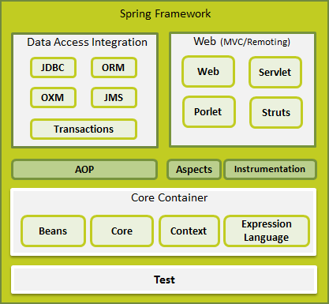

Spring Framework (DI / AOP)
Spring Framework
- Powstał w 2003 roku
- Szkielet tworzenia aplikacji dla języka Java
- Alternatywa dla programowania w EJB
- Oferuje dużą swobodę wytwarzania oprogramowania
- Bardzo dobra dokumentacja
- Gotowa implementacja wielu zagadnień
- Ogromne wsparcie dla Java EE
- Propaguje poprawny styl programowania
- Jest dostępny na zasadach open source
Spring Framework - moduły
- Składa się z kilku niezależnych od siebie modułów
- Moduły można ze sobą łączyć w celu uzyskania większej funkcjonalności

Spring Framework – podstawowy kontener
- Core
- podstawowa część frameworka, zawiera IoC i wstrzykiwanie zależności
- Beans
- eliminuje potrzebę programowego tworzenia singletonów
- oddziela zależność pomiędzy konfiguracją, specyfikacją a logiką programu
Spring Framework – podstawowy kontener
- Context
- umożliwia dostęp do obiektów zarządzanych przez framework
- pozwala na wydzielenie konfiguracji do plików *.properties
- udostępnia interface ApplicationContext
- EL - Spring Expression Language
@Value("#{applicationProperties['jakas.zmienna.z.pliku.properties']}")
private String zmienna;
Inversion of Control, Dependency Injection
- Paradygmat programowania, wzorzec projektowy, wzorzec architektoniczny.
- Zastosowanie
- w pojedynczych komponentach,
- w architekturze całego systemu (Spring Framework)
- W klasycznym podejściu obiekty są budowane statycznie, brak wpływu na ich postać.
- Odwracamy kontrolę – budowaniem obiektów zajmuje się framework
Słyszałem / wygooglowałem że Spring to głównie konfiguracje XMLowe
- Tak było kiedyś, teraz większość podstawowych konstrukcji może bez problemu być konfigurować za pomocą adnotacji
- Konfiguracje poprzez XML cały czas działają
Ale adnotacje w tej prezentacji nie są Interfejsami tylko Springowymi, ale też należącymi do JPA i Hibernate.
Inversion of Control, Dependency Injection
Wstrzykiwanie zależności – dla danego obiektu definiujemy, z jakich innych komponentów będzie korzystał, ale nie musimy się martwić o tworzenie instancji tych obiektów – zrobi to za nas framework, wykorzystywane w Springu.
@Service
public class CustomerServiceImpl {
private final CustomerMapper customerMapper;
private final CustomerDao customerDao;
@Autowired
public CustomerServiceImpl (CustomerMapper mapper, CustomerDao dao) {
this.customerMapper = mapper;
this.customerDao = dao;
}
Jak zacząć ze springiem?
- Podłączyć jary sciągnięte z internetu
-
W internecie poszukać dependency do POMa i podłączyć
-
Sciągnąć kompletny STS (Spring Tool Suite)
-
start.spring.io
Spring framework - podstawy
import org.springframework.boot.SpringApplication;
import org.springframework.boot.autoconfigure.SpringBootApplication;
import org.springframework.data.jpa.repository.config.EnableJpaRepositories;
@SpringBootApplication
public class BooksServerApplication {
public static void main(String[] args) {
SpringApplication.run(BooksServerApplication.class, args);
}
}
Spring framework - adnotacje
- @Component - podstawowa adnotacja, określa że klasa jest zarządzana przez Spring
- @Service - określa klasę zawierającą logikę biznesową
- @Repository - klasy DAO (Data Access Object), bezpośrednia komunikacja z DB
Wszystkie działają i robią to samo
Wyjątkiem jest @Repository, która dodatkowo konwertuje wyjątki dostawców bazy danych
Adnotacje pozwalają oddzielić od siebie różne warstwy aplikacji
Ułatwiają czytanie i analizowanie kodu
Spring framework - adnotacje
- @Controller - przetwarza żądania HTTP
- @Scope - umożliwia zmianę domyślnego czasu życia bean’a
- @PostConstruct - umożliwia wywołanie części kodu zaraz po utworzeniu obiektu
- @RequestMapping - używana w kontrolerze, mapuje adres URL na metodę
Adnotacje - przykład
@RequestMapping("/services")
@RestController
public class BooksRestService {
private final BookService bookService;
@Autowired
public BooksRestService(BookService bookService) {
this.bookService = bookService;
}
@RequestMapping(path = "/books", method = RequestMethod.GET)
public List<BookTo> findBooks(BookSearchCriteria bookSearchCriteria) {
return bookService.findBooks(bookSearchCriteria);
}
}